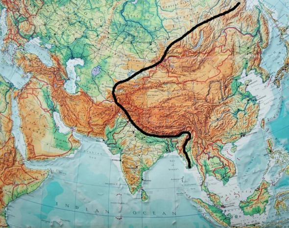

ADORNMENTS]
অলঙ্করণ]
The Surah speaks about major Prophets: Abraham, Moses, and Jesus. It called the Arabs to abandon the footsteps of their ancestors and hold firmly to the truth.
সূরাটি প্রধান নবীদের সম্পর্কে বলে: আব্রাহাম, মূসা এবং যীশু। এটি আরবদেরকে তাদের পূর্বপুরুষদের পদাঙ্ক পরিত্যাগ করে সত্যকে দৃঢ়ভাবে আঁকড়ে ধরার আহ্বান জানিয়েছে।
Segment 1: Endeavor to bring the People in Truth
সেগমেন্ট 1: মানুষকে সত্যে আনার চেষ্টা করুন
Segment 2: Reward and Punishment Justified
বিভাগ 2: পুরস্কার এবং শাস্তি ন্যায়সঙ্গত
Segment 3: Conclusion
সেগমেন্ট 3: উপসংহার
Tafsir of the Surah Segment-1 Endeavor to bring the People in Truth
সূরা সেগমেন্ট-১ এর তাফসীর মানুষকে সত্যে আনার চেষ্টা করুন
Ha, Mim. By the Book that makes things clear, We have made it a Qur'an (Recitation) in Arabic that ye may be able to understand. And verily, it is in the Mother of the Book, in Our Presence, high, full of wisdom.
হা, মিম। যে কিতাবের দ্বারা বিষয়গুলি স্পষ্ট করা হয়েছে, আমি একে আরবী ভাষায় কুরআন (তিলাওয়াত) করেছি যাতে তোমরা বুঝতে পার। এবং সত্যই, এটি কিতাবের মাতার মধ্যে, আমাদের উপস্থিতিতে, উচ্চ, জ্ঞানে পরিপূর্ণ।
We know about a Pen and a Saving Disc (Lawh-Mahfuz) from the Quran and the Hadith. These are parts of a highly developed computer. I call it ―Central Computer of the Universes‖ or ―CCU‖ in short. The above verses refer to another major part of the CCU, called the 'Mother of the Book.' The Mother of the Book can give birth to a Book. So, it is a highly developed motherboard with various circuits and other components.
আমরা কুরআন ও হাদিস থেকে একটি কলম এবং একটি সেভিং ডিস্ক (লাহ-মাহফুজ) সম্পর্কে জানি। এগুলো একটি অত্যন্ত উন্নত কম্পিউটারের অংশ। আমি একে বলি "মহাবিশ্বের সেন্ট্রাল কম্পিউটার" বা সংক্ষেপে "CCU"। উপরের আয়াতগুলো CCU-এর আরেকটি বড় অংশকে নির্দেশ করে, যাকে বলা হয় 'বুকের মা'। বইয়ের মা একটি বইয়ের জন্ম দিতে পারেন। সুতরাং, এটি বিভিন্ন সার্কিট এবং অন্যান্য উপাদান সহ একটি অত্যন্ত উন্নত মাদারবোর্ড।
FIGURE 43.1: Motherboard of a Manmade Computer The CCU is a vast system. Its disc (Lawh-Mahfuz) may be larger than the Earth, revolving in the Arsh. It keeps records of everything. [The CCU is deliberately discussed in Section-9 of Chapter-6]
চিত্র 43_1 / Figure 43_1
চিত্র 43.1: একটি মনুষ্যসৃষ্ট কম্পিউটারের মাদারবোর্ড সিসিইউ একটি বিশাল ব্যবস্থা। এর চাকতি (লাহ-মাহফুজ) পৃথিবীর চেয়ে বড় হতে পারে, আরশে ঘোরে। এটি সবকিছুর রেকর্ড রাখে। [অধ্যায়-6-এর ধারা-9-এ সিসিইউ ইচ্ছাকৃতভাবে আলোচনা করা হয়েছে]
চিত্র 43_1 / Figure 43_1
Shall We then take away the Message from you and repel; for that ye are a people transgressing beyond bounds. But, how many were the prophets We sent among the peoples of old? And never came there a prophet to them but they mocked him. So, We destroyed stronger in power than these and has passed example of the former. If thou were to question them: Who created the Skies and Lands? They would be sure to reply: They were created by the Exalted in Power, Full of Knowledge. Has made for you the land spread out and has made for you paths therein in order that ye may find guidance.
তাহলে আমরা কি তোমাদের কাছ থেকে বাণী কেড়ে নেব এবং প্রতিহত করব? কারণ তোমরা সীমালংঘনকারী সম্প্রদায়। কিন্তু, আমরা প্রাচীন যুগের মধ্যে কতজন নবী প্রেরণ করেছি? আর সেখানে তাদের কাছে কোন নবী আসেনি কিন্তু তারা তাকে ঠাট্টা-বিদ্রূপ করেছে। সুতরাং, আমরা তাদের চেয়ে শক্তিশালী ধ্বংস করেছি এবং পূর্বের উদাহরণ দিয়েছি। আপনি যদি তাদেরকে প্রশ্ন করেন যে, আকাশ ও জমিন কে সৃষ্টি করেছে? তারা নিশ্চিতভাবে উত্তর দেবে: তাদের সৃষ্টি করা হয়েছে পরাক্রমশালী, জ্ঞানে পরিপূর্ণ। তোমাদের জন্য বিস্তৃত জমি তৈরি করেছেন এবং তাতে তোমাদের জন্য পথ তৈরি করেছেন যাতে তোমরা পথপ্রদর্শন করতে পার।
The continental plates have drifted apart, causing the land to spread out. The interactions at the plate boundaries have formed wide and high mountain ranges. These mountain ranges have paths that allow humans to settle in suitable places and move even from one continent to another, such as the Khyber Pass. The modern roads built through the high mountain ranges primarily follow these naturally created paths. If the paths had not been created by God, it would have been nearly impossible for humans to construct roads through the hilly terrains. Only the China-Myanmar Mountain Barrier does not have a natural crossing route. This is also by design of God. The history of mankind would have been different if crossing in mass with heavy loads had been possible.
মহাদেশীয় প্লেটগুলো ভেসে গেছে, যার ফলে ভূমি ছড়িয়ে পড়েছে। প্লেটের সীমানায় মিথস্ক্রিয়া প্রশস্ত এবং উচ্চ পর্বতশ্রেণী তৈরি করেছে। এই পর্বতশ্রেণীগুলির পথ রয়েছে যা মানুষকে উপযুক্ত জায়গায় বসতি স্থাপন করতে এবং এমনকি খাইবার গিরিপথের মতো এক মহাদেশ থেকে অন্য মহাদেশে যেতে দেয়। উচ্চ পর্বতশ্রেণীর মধ্য দিয়ে নির্মিত আধুনিক রাস্তাগুলি প্রাথমিকভাবে প্রাকৃতিকভাবে তৈরি এই পথগুলি অনুসরণ করে। পথগুলো যদি ঈশ্বর সৃষ্টি না করতেন, তাহলে পাহাড়ি অঞ্চল দিয়ে রাস্তা নির্মাণ করা মানুষের পক্ষে প্রায় অসম্ভব হতো। শুধুমাত্র চীন-মিয়ানমার মাউন্টেন ব্যারিয়ারে প্রাকৃতিক ক্রসিং রুট নেই। এটাও ঈশ্বরের নকশায়। মানবজাতির ইতিহাস অন্যরকম হতো যদি ভারী বোঝা নিয়ে পারাপার করা সম্ভব হতো।
FIGURE 43.2: Black Line- China-Myanmar Mountain Barrier

চিত্র 43_2 / Figure 43_2
চিত্র 43.2: কালো রেখা- চীন-মিয়ানমার পর্বত বাধা
চিত্র 43_2 / Figure 43_2
However, in modern times, the barrier is crossed by roads and bridges built as part of the Chinese Belt and Road Initiative, without using natural paths at several points, through heavy engineering efforts and modern technologies. That sends down rain from the sky in due measure, and We raise to life therewith a land that is dead—so will ye be raised. That has created Pairs (DNA Double Helix) in all things and has made for you ships and cattle on which ye ride. In order that ye may sit firm and square on their backs, and when so seated, ye may celebrate the favor of your Lord and say: "Glory to Him Who has subjected these to us, for we could never have accomplished this, and to our Lord surely must we turn back!"
যাইহোক, আধুনিক সময়ে, ভারী প্রকৌশল প্রচেষ্টা এবং আধুনিক প্রযুক্তির মাধ্যমে বিভিন্ন পয়েন্টে প্রাকৃতিক পথ ব্যবহার না করে চীনা বেল্ট অ্যান্ড রোড ইনিশিয়েটিভের অংশ হিসাবে নির্মিত রাস্তা এবং সেতু দ্বারা বাধা অতিক্রম করা হয়। যা আকাশ থেকে যথা সময়ে বৃষ্টি বর্ষণ করে এবং আমরা তা দ্বারা মৃত ভূমিকে জীবিত করি এবং তোমরাও পুনরুত্থিত হবে। এটি সমস্ত জিনিসের মধ্যে জোড়া (ডিএনএ ডাবল হেলিক্স) তৈরি করেছে এবং আপনার জন্য জাহাজ এবং গবাদি পশু তৈরি করেছে যাতে আপনি চড়েন। যাতে তোমরা তাদের পিঠে দৃঢ় ও চৌকো করে বসতে পার, এবং যখন বসে থাকবে, তখন তোমরা তোমাদের পালনকর্তার অনুগ্রহ উদযাপন করতে পারো এবং বলতে পারো: "তাঁর মহিমা যিনি এগুলো আমাদের অধীন করেছেন, কারণ আমরা কখনোই এটা করতে পারতাম না, এবং অবশ্যই আমাদের প্রভুর দিকে ফিরে যেতে হবে!"
A horse is made from flesh and bones, and a ship is made from wood. But both are created from 'Pairs' (double helix DNA molecules). Thus, the verses of the last paragraph say: ―That has created Pairs (DNA Double Helix) in all things and has made for you ships and cattle on which ye ride…‖ Chemically, the genomes of all living cells are the same, but they differ in information content—one creates a horse, another creates a tree. The brain of a domestic animal is programmed through gene expression during its development in the mother‘s womb. A donkey can carry loads, but a zebra cannot be trained to do the same: ―Glory to Him Who has subjected these to us, for we could never have accomplished this, and to our Lord surely must we turn back.‖
একটি ঘোড়া মাংস এবং হাড় থেকে তৈরি করা হয়, এবং একটি জাহাজ কাঠ থেকে তৈরি করা হয়। কিন্তু উভয়ই 'পেয়ার্স' (ডাবল হেলিক্স ডিএনএ অণু) থেকে তৈরি। এইভাবে, শেষ অনুচ্ছেদের শ্লোকগুলি বলে: "এটি সমস্ত জিনিসের মধ্যে জোড়া (ডিএনএ ডাবল হেলিক্স) তৈরি করেছে এবং আপনার জন্য জাহাজ এবং গবাদি পশু তৈরি করেছে যার উপর তোমরা চড়ো..." রাসায়নিকভাবে, সমস্ত জীবন্ত কোষের জিনোম একই, তবে তথ্য সামগ্রীতে তারা আলাদা - একজন ঘোড়া তৈরি করে, অন্যজন একটি গাছ তৈরি করে। গৃহপালিত প্রাণীর মস্তিষ্ক মায়ের গর্ভে তার বিকাশের সময় জিনের প্রকাশের মাধ্যমে প্রোগ্রাম করা হয়। একটি গাধা বোঝা বহন করতে পারে, কিন্তু একটি জেব্রাকে একই কাজ করার জন্য প্রশিক্ষিত করা যায় না: "তাঁর মহিমা যিনি এইগুলি আমাদের অধীন করেছেন, কারণ আমরা এটি কখনই সম্পন্ন করতে পারিনি এবং আমাদের প্রভুর কাছে অবশ্যই আমাদের ফিরে যেতে হবে।"
Yet they attribute to some of His servants a share with Him! Truly is man a blasphemous ingrate avowed! What! Has He taken daughters out of what He himself creates, and granted to you sons for choice? When news is brought to one of them of what he sets up as a likeness to Most Gracious, his face darkens, and he is filled with inward grief! Is then one brought up among trinkets and unable to give a clear account in a dispute! And they make into females angels who themselves serve God. Did they witness their creation? Their evidence will be recorded, and they will be called to account! They say, "If it had been the will of Most Gracious, we should not have worshipped such!" Of that they have no knowledge! They do nothing but lie! What! Have We given them a Book before this to which they are holding fast? Nay! They say: "We found our fathers following a certain religion, and we do guide ourselves by their footsteps."
অথচ তারা তাঁর কিছু বান্দাকে তাঁর সাথে অংশীদার করে! সত্যিই মানুষ একটি নিন্দিত অকৃতজ্ঞ স্বীকৃত! কি! তিনি কি নিজে যা সৃষ্টি করেছেন তা থেকে কন্যাসন্তান গ্রহণ করেছেন এবং তোমাদের জন্য পছন্দের জন্য পুত্র দিয়েছেন? যখন তাদের একজনের কাছে পরম করুণাময়ের উপমা স্বরূপ এমন কিছুর খবর আনা হয়, তখন তার মুখ কালো হয়ে যায় এবং সে মনের দুঃখে ভরে যায়! তাহলে কি একজন ট্রিঙ্কেটের মধ্যে বড় হওয়া এবং একটি বিবাদে স্পষ্ট বিবরণ দিতে অক্ষম! এবং তারা নারী ফেরেশতা তৈরি করে যারা নিজেরাই ঈশ্বরের সেবা করে। তারা কি তাদের সৃষ্টি প্রত্যক্ষ করেছে? তাদের সাক্ষ্য-প্রমাণ লিপিবদ্ধ করা হবে, এবং তাদের হিসাব নেওয়া হবে! তারা বলে, "যদি পরম করুণাময়ের ইচ্ছা হতো, তাহলে আমাদের এমন উপাসনা করা উচিত ছিল না!" সে বিষয়ে তাদের কোন জ্ঞান নেই! তারা মিথ্যা বলা ছাড়া কিছুই করে না! কি! আমি কি তাদের এর আগে কোন কিতাব দিয়েছি যা তারা দৃঢ়ভাবে ধরে আছে? না! তারা বলে: "আমরা আমাদের পিতাদেরকে একটি নির্দিষ্ট ধর্মের অনুসারী পেয়েছি এবং আমরা তাদের পদাঙ্ক অনুসরণ করি।"